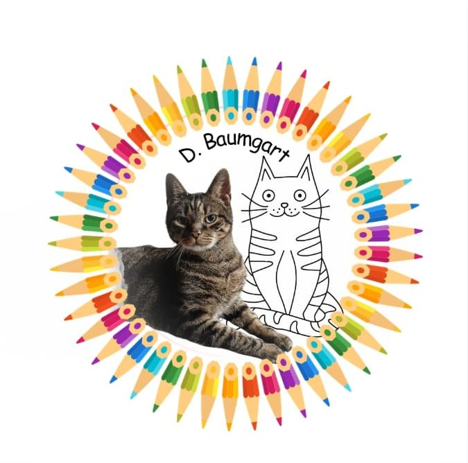
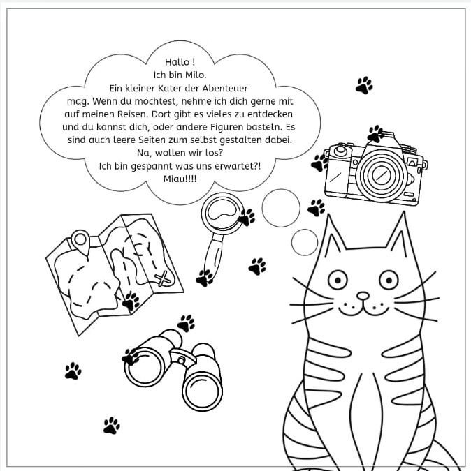
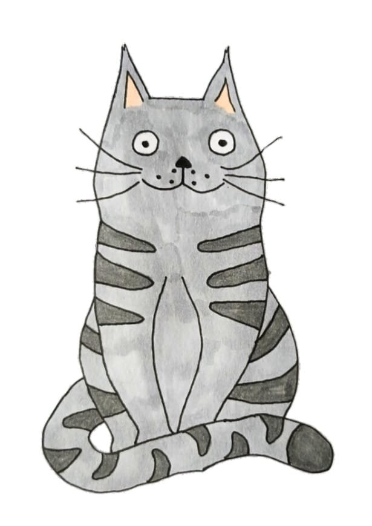
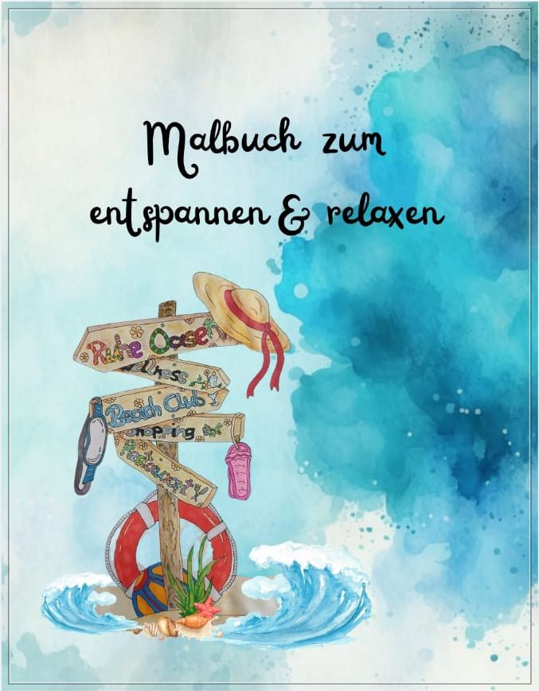
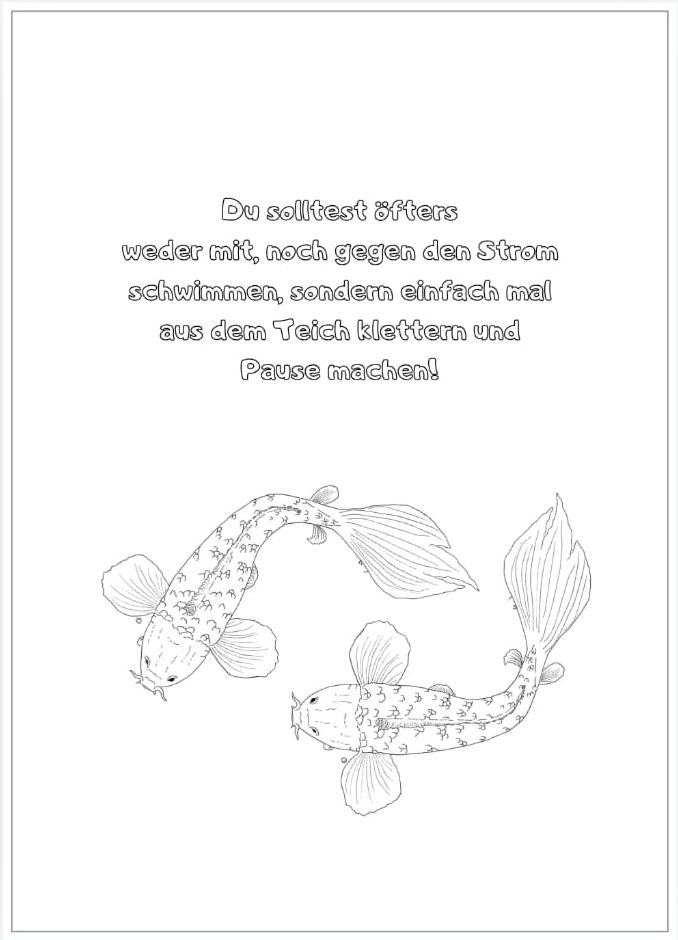
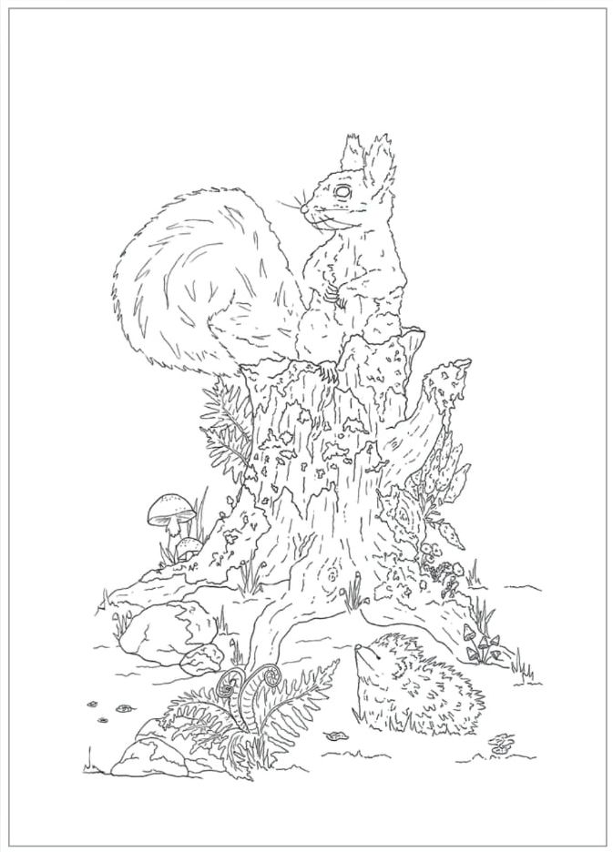

Über mich

Hallo, ich bin Doreen Baumgart!
Schon seit ich denken kann, begleiten mich große Leidenschaften: das erfinden von Geschichten, das Malen und zeichnen von Bildern. Für mich fließen Fantasie und Kreativität auf wundersame Weise ineinander. Wenn ich nicht gerade an neuen Buchwelten tüftele, findet man mich oft mit dem Pinsel oder Bleistift in der Hand. Ich lade dich herzlich ein, in meine kleine, bunte Welt einzutauchen!
Meine Bücher & Werke
Kater Milo's Abenteuer
Begleite den neugierigen Kater Milo auf seinen aufregenden Streifzügen durch eine Fantasievolle Welt. Eine herzerwärmende Geschichte voller kleinen Entdeckungen, Freundschaft und Mut für Groß und Klein.


Malbuch zum Entspannen & Relaxen
Nimm dir eine Auszeit vom Alltag! Dieses liebevoll gestaltete Malbuch bietet dir wunderschöne, beruhigende Motive und Sprüchen zum Ausmalen. Perfekt, um den Kopf freizubekommen und die eigene Kreativität frei zu entfalten.


